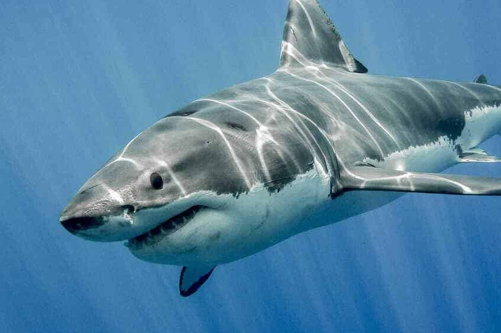

Büyük Beyaz Köpek Balığı
Büyük beyaz köpek balığının dünya denizlerindeki dağılımı. Büyük yetişkin dişilerinin boyu 6,1 metreye, ağırlığı 2.268 kilograma ulaşabilen bu köpek balığı, bütün dünyadaki ılıman sularda bulunur. Büyük beyaz köpek balığının Akdeniz havzasındaki temel besinleri, orkinos balıklarıdır.
Daha Fazlası İçin; Tıklayınız!